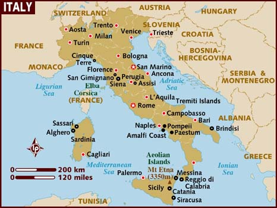

Італія. Загальна довідка
| Офіційна назва | Repubblica Italiana |
| Столиця | Рим (2 775 000 осіб) |
| Найбільші міста | Мілан (1 369 000 осіб), Неаполь (1 067 000 осіб), Турин (963 000 осіб), Палермо (699 000 осіб), Генуя (679 000 осіб), Болон’я (404 000 осіб), Флоренція (403 000 осіб), Барі (342 000 осіб), Катан’я (333 000 осіб), Венеція (309 000 осіб). |
| Загальна площа (кв. км) | 301 302 |
| Географічне положення | Південь Європи Італії також належать острови Ельба, Сицилія, Сардинія та декілька малих островів. Дві незалежні держави - Сан-Марино та Ватикан–розташовані на території Апеннінського півостровата повністю оточені Італією |
| Населення | Чисельність населення (осіб) - 56 782 750 Густота населення (осіб/кв. км) – 188 Тривалість життя (років) – 74 (чоловіки), 81 (жінки) Коефіцієнт народжуваності (осіб/1000 осіб) – 9,1 Коефіцієнт смертності (осіб/1000 осіб) – 10,2 |
| Валюта | 1 євро (EUR)=43,51 грн (UAH) |
| Мови | Італійська (офіційна) В деяких регіонах розмовляють німецькою (Больцано), французькою (Баллє д’Аоста), словенською, грецькою, албанською |
Історія
Історія Італії починається близько 500 року до н.е., коли були закладені основи могутньої Римської Імперії, яка займала к V сторіччю величезні території Європи, Азії та північної Африки. Наприкінці V сторіччя сучасна Італія була завойована германцями, остготами та готами, правління яких продовжувалось декілька століть. Наприкінці середніх століть з’явилися багаті міста-держави, які мирно проіснували до середини XV століття, коли сусідні держави почали серію війн за володіння територіями Апенінскього півострова. У 1861 році король Сардинії Віктор Емануель II проголосив створення єдиної держави, до складу якої, однак, ще не входили Рим та Венеція. К 1870 року Італія знаходилась вже практично в сучасних кордонах, а в липні 1871 року Рим став столицею об’єднаної Італії. У 1922 році до влади в Італії прийшов фашистський режим Беніто Муссоліні, який проіснував до 1943 року, коли диктатор Муссоліні був страчений партизанами, а війська союзників висадились в Італії. В червні 1946 року король Італії відрікся від трону та покинув країну. Італія була проголошена республікою. З 1944 року політичне життя Італії проходить доволі бурхливо, чому свідчить часта (іноді два-три рази на рік) відставка уряду країни. Італія є членом ООН та всіх спеціалізованих агентств цієї організації, НАТО, ЄС, ОБСЄ, Організації економічної співпраці та розвитку.